Voorkant
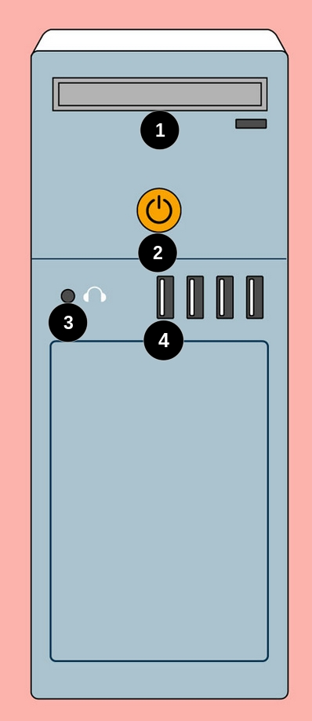
1
CD of DVD-ROM-station of drive, hiermee kan je computer cd’s en dvd’s lezen.
2
De aan/uit-knop wordt gebruikt om de computer in te schakelen en uit te schakelen.
3
Audio In/Audio Out Veel computers hebben audio-poorten aan de voorkant van de computerbehuizing, waarmee je gemakkelijk luidsprekers, microfoons en headsets kunt aansluiten zonder te hoeven rommelen aan de achterkant van de computer.
4
USB-poort (Universal Serial Bus) De meeste desktopcomputers hebben meerdere USB-poorten. Deze kunnen worden gebruikt om bijna elk type apparaat aan te sluiten, zoals muizen, toetsenborden, printers en digitale camera’s. Ze bevinden zich vaak aan de voor- en achterkant van de computer.
Achterkant
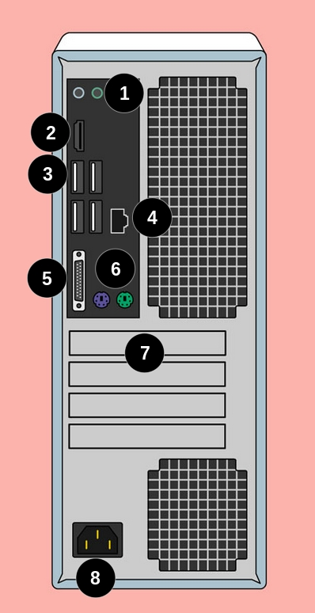
1
Audio In/Audio Out
Bijna elke computer heeft twee of meer audio-poorten waarop je verschillende apparaten kunt aansluiten, zoals luidsprekers, microfoons en headsets.
- Roze Deze poort is voor microfoons (invoer). Het is de poort waar je een microfoon kunt aansluiten om geluid naar de computer in te voeren, bijvoorbeeld voor spraakopname of videoconferenties.
- Groen Deze poort is voor luidsprekers of hoofdtelefoons (uitvoer). Het is meestal de poort die je gebruikt om geluid uit de computer naar je externe luidsprekers of hoofdtelefoon te sturen.
- Blauw Deze poort is voor line-in (invoer). Het wordt gebruikt voor het aansluiten van apparaten zoals een cd-speler, een externe geluidsbron of andere audiobronnen die je in de computer wilt invoeren.
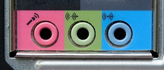
2
Monitorpoort
Hier sluit je de kabel van je monitor aan. In dit voorbeeld heeft de computer zowel een DisplayPort- als een VGA-poort. Andere computers kunnen verschillende soorten monitorpoorten hebben, zoals DVI (digital visual interface) of HDMI (high-definition multimedia interface).
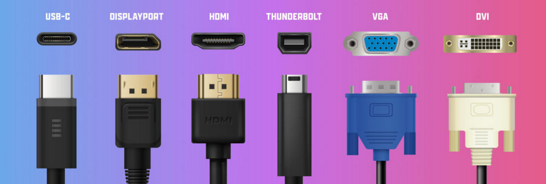
3
USB-poorten
Bij de meeste desktopcomputers bevinden de meeste USB-poorten zich aan de achterkant van de computerbehuizing. Over het algemeen wil je je muis en toetsenbord op deze poorten aansluiten en de USB-poorten aan de voorkant vrij houden, zodat ze gebruikt kunnen worden voor digitale camera’s en andere apparaten.
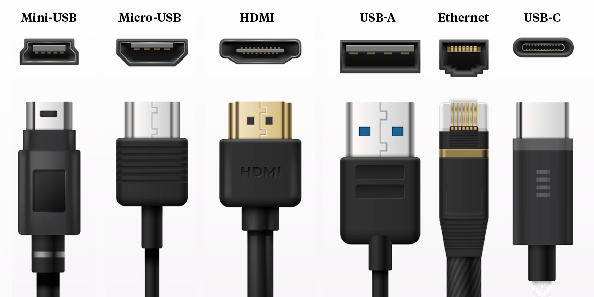
4
Ethernetpoort
Via poort geeft je netwerkverbinding en internetaansluiting.
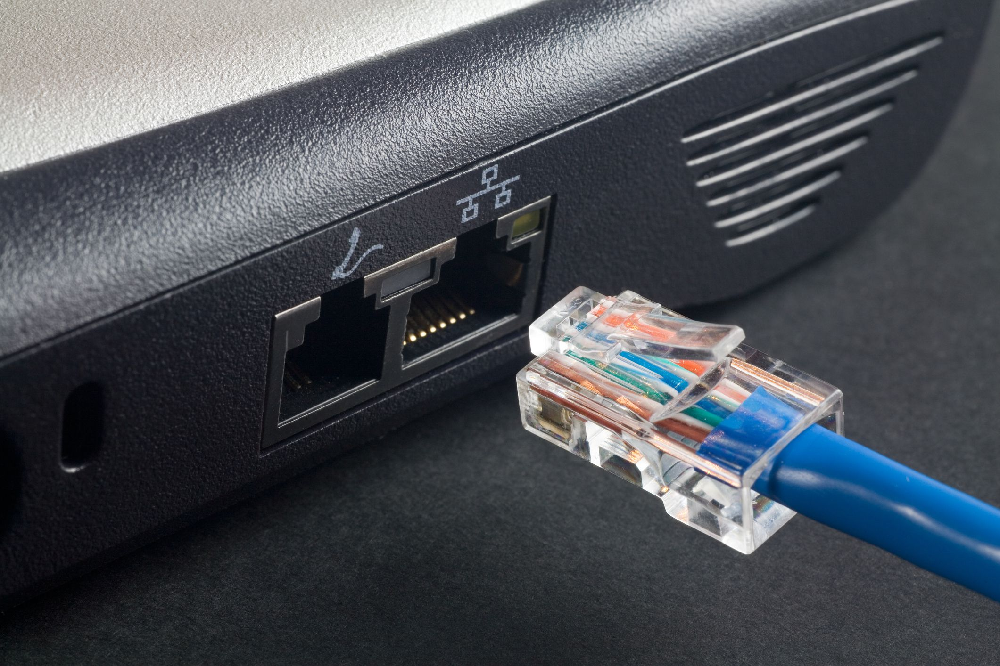
5
Seriële poort
Deze poort is minder gebruikelijk op moderne computers. Vroeger werd het vaak gebruikt om randapparatuur, zoals digitale camera’s, aan te sluiten, maar het is vervangen door USB en andere soorten poorten.
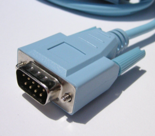
6
PS/2 poorten
De PS/2 poort is een oudere computeraansluiting die vooral werd gebruikt voor toetsenborden en muizen vóór de komst van USB.
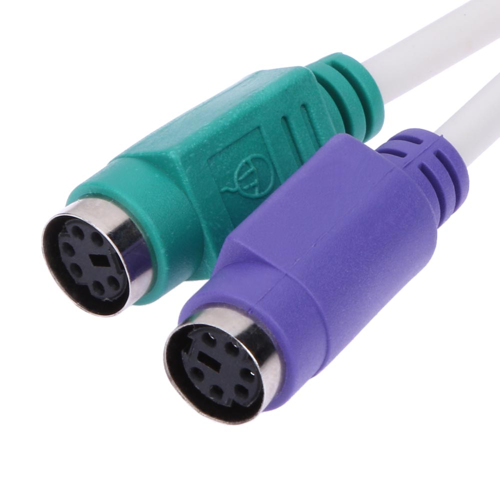
7
Uitbreidingssleuven
Deze lege sleuven zijn waar uitbreidingskaarten aan computers worden toegevoegd. Bijvoorbeeld, als je computer geen videokaart had, kun je er een kopen en deze hier installeren.
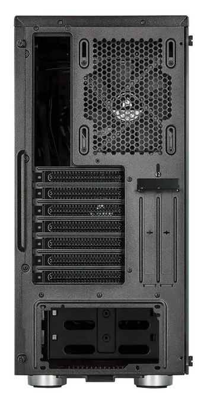
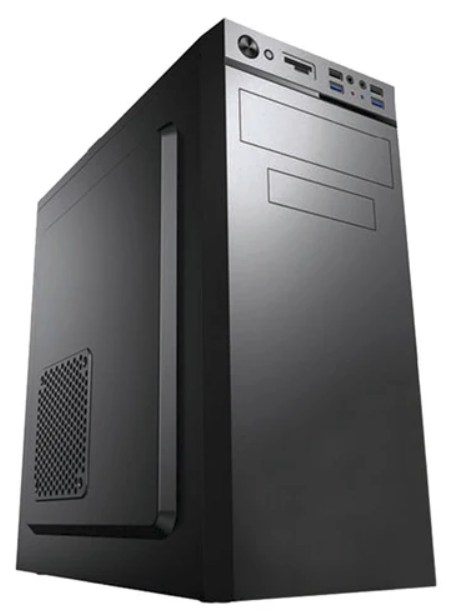
8
Power Socket stopcontact
Hier sluit je de stroomkabel aan op de computer.
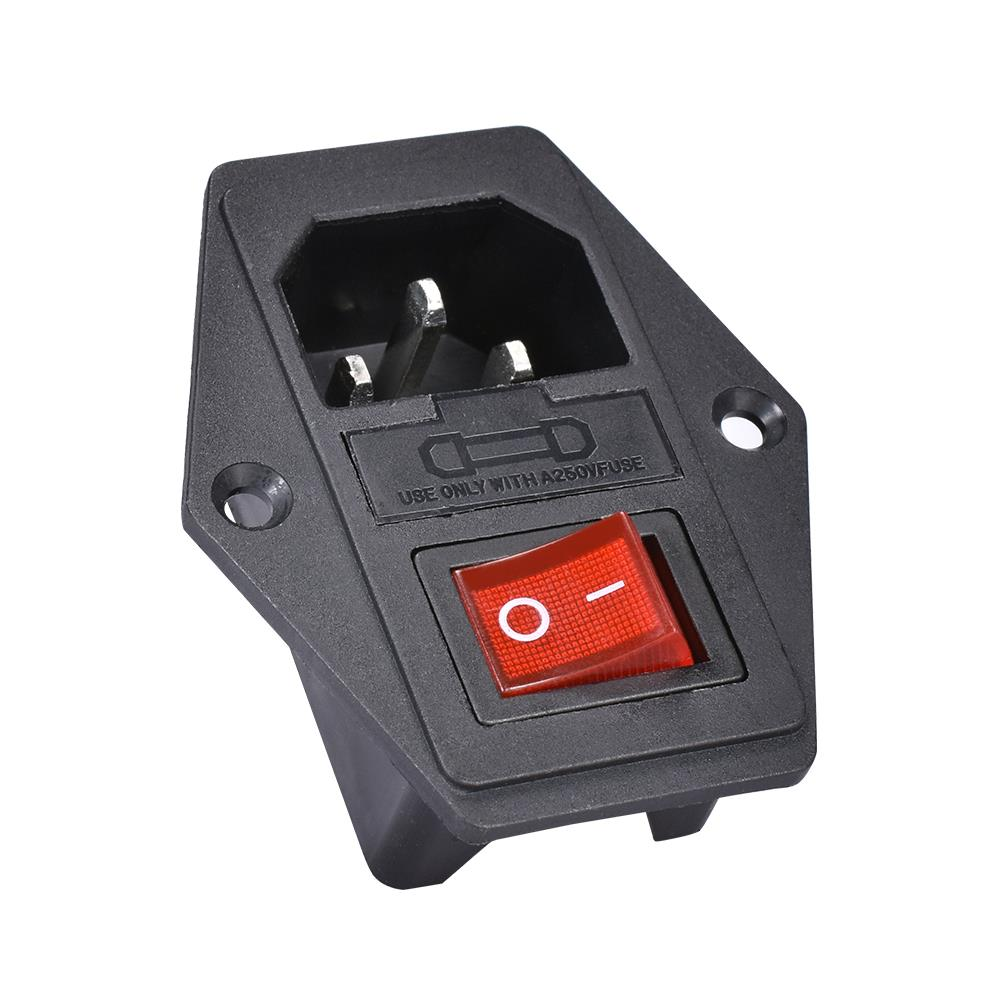
Created: 12/11/2024